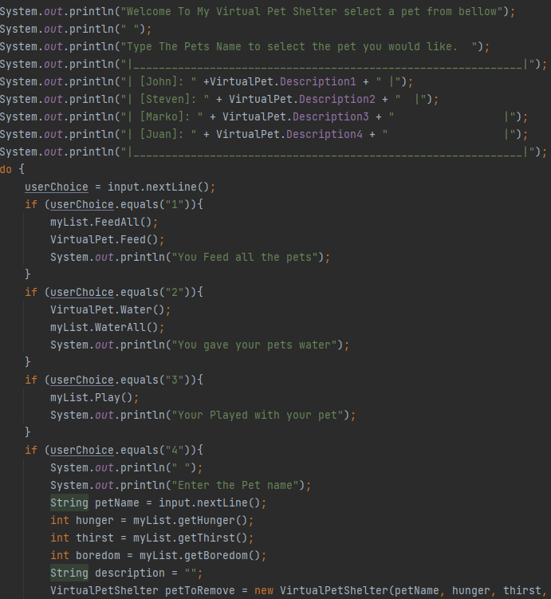

About ME
My Projects
Virtual Pet

a console game with a single virtual pet where u can choose to feed it or give it water
Skills: Java
Tools: Intelij & GitBash
Virtual Pet Shelter
a build on the first version of virtual pets. added a shelter and the ability to adopt and tend to mutiple pets at once
Skills: Java & TDD
Tools: Intelij & GitBash
Virtual Pet amok
a updated version of Virtual Pet Shelter added the ability to choose between robotic and organic pets separate shelters for each and cats and dogs
Skills: Java , OOP & TDD
Tools: Intelij & GitBash